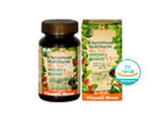
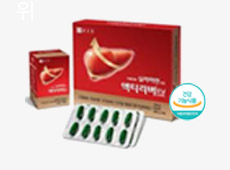

<!DOCTYPE html>
<html lang="ko">
<head>
<meta charset="UTF-8">
<meta http-equiv="Content-Language" content="ko-KR">
<meta name="viewport" content="width=device-width, initial-scale=1.0, minimum-scale=1.0, maximum-scale=1.0, user-scalable=no">
<meta name="format-detection" content="telephone=no">
<link href="../resources/css/common.css" media="screen" rel="stylesheet">
<link href="../resources/css/ai_care.css" media="screen" rel="stylesheet">
<link href="../resources/css/site_app.css" media="screen" rel="stylesheet">
<link href="../resources/css/device.css" media="screen" rel="stylesheet">
<script src="https://ajax.googleapis.com/ajax/libs/webfont/1.6.26/webfont.js"></script>
<script src="../resources/js/jquery-1.11.1.min.js"></script>
<script src="../resources/js/design.js"></script>
<title>AI건강리뷰</title>
</head>
<body>

<div id="wrap">

	<div id="ct">
        <div class="list_detail4 data_wrap">
            <aside id="section1" class="ai_brn_outlink">
                <a href="#;" data-name="분석">
                    <span class="mtxt">건강한 간을 위한<strong>밀크씨슬</strong>가성비 갑 제품은 무엇?</span>
                    <span class="stxt tx1"><b>AI건강기능식품 분석</b></span>
                    <span class="stxt tx2"><b>리뷰 1,358 건</b></span>
                    <span class="ele bar">
                        <span class="ele stamp" data-cat="가성비&#xa;우수"></span>
                    </span>
                    <span class="ele ipbx"></span>
                    <span class="ele ip elip1">*****씨슬</span>
                    <span class="ele skip">인공지능 분석 결과 확인하기</span>
                </a>
                <!-- //분석 -->
                <a href="#;" data-name="비교">
                    <span class="mtxt">건강한 체력관리를 위한<strong>멀티비타민</strong>2개중 가성비 갑 제품은?</span>
                    <span class="stxt tx1"><b>AI건강기능식품 비교</b></span>
                    <span class="ele skip">인공지능 비교 결과 확인하기</span>
                    <ul class="vslst">
                        <li class="ele">
                            <span class="img">
                                
                            </span>
                            <strong class="name elip2">두시모네 듀얼스틱 장케어 30스틱</strong>
                            <p class="count">리뷰 1,375건</p>
                        </li>
                        <li class="ele">
                            <span class="img">
                                
                            </span>
                            <strong class="name elip2">두시모네 듀얼스틱 장케어 30스틱</strong>
                            <p class="count">리뷰 9,999건</p>
                        </li>
                    </ul>
                </a>
                <!-- //비교 -->
                <a href="#;" data-name="궁합">
                    <span class="mtxt">내가먹는 건강기능식품,<strong>궁합<s>을</s> 알고먹으면</strong>효과도 더 좋다구요?!</span>
                    <span class="stxt tx1"><b>성분궁합 시간표</b></span>
                    <span class="ele skip">성분 궁합 시간표 확인하기</span>
                    <span class="network">
                        <i class="ele">루테인</i><i class="ele">세라미드세라미드세라미드세라미드세라미드</i><i class="ele">가르<br>시니아</i><i class="ele">비타민<br>C</i><i class="ele">칼슘</i><i class="ele">오메가<br>3</i>
                    </span>
                </a>
                <!-- //궁합 -->
                <a href="#;" data-name="안정">
                    <span class="mtxt">내가 먹는 제품이 과연<strong>인증받은 안전한</strong>건강기능식품일까?</span>
                    <span class="stxt tx1"><b>안전성 확인</b></span>
                    <span class="stxt tx2"><b>리뷰 1,358 건</b></span>
                    <span class="ele bar">
                        <span class="ele stamp" data-cat="건강기능식품"></span>
                    </span>
                    <span class="ele ipbx"></span>
                    <span class="ele ip elip1">두시모네 듀얼스틱 장케어 30스틱</span>
                    <span class="ele skip">안전성 결과 확인하기</span>
                </a>
                <!-- //안정 -->
            </aside>
        </div>
	</div>
	<!-- //content -->
	<footer id="footer">
        <button type="button" class="topGo"><i class="ico_com">맨위로</i></button>
    </footer>
	<!-- //footer -->

</div>

<script src="../resources/js/design_ai.js"></script>
<!-- //js -->

</body>
</html>
